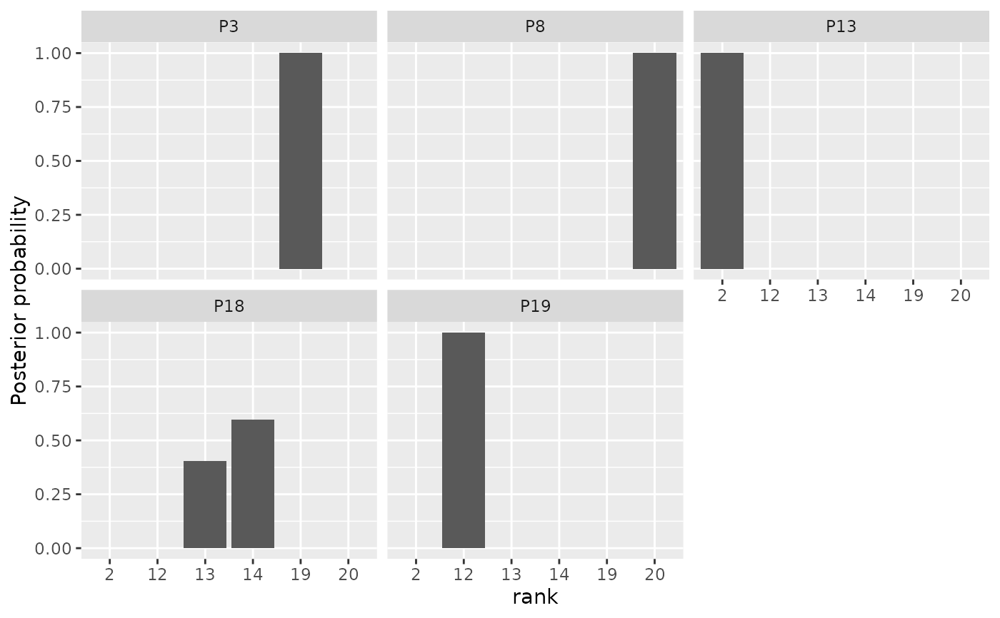
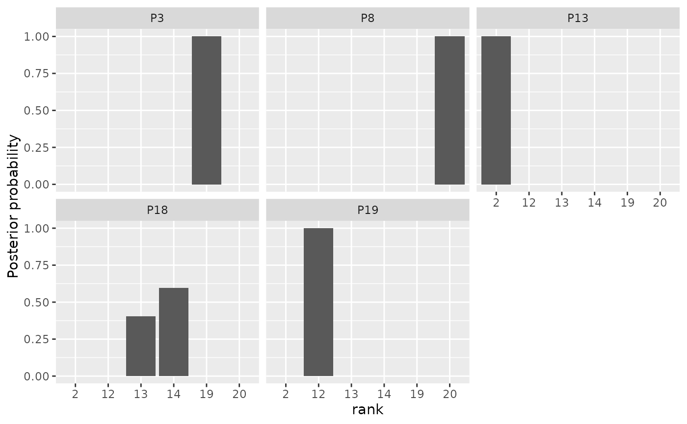
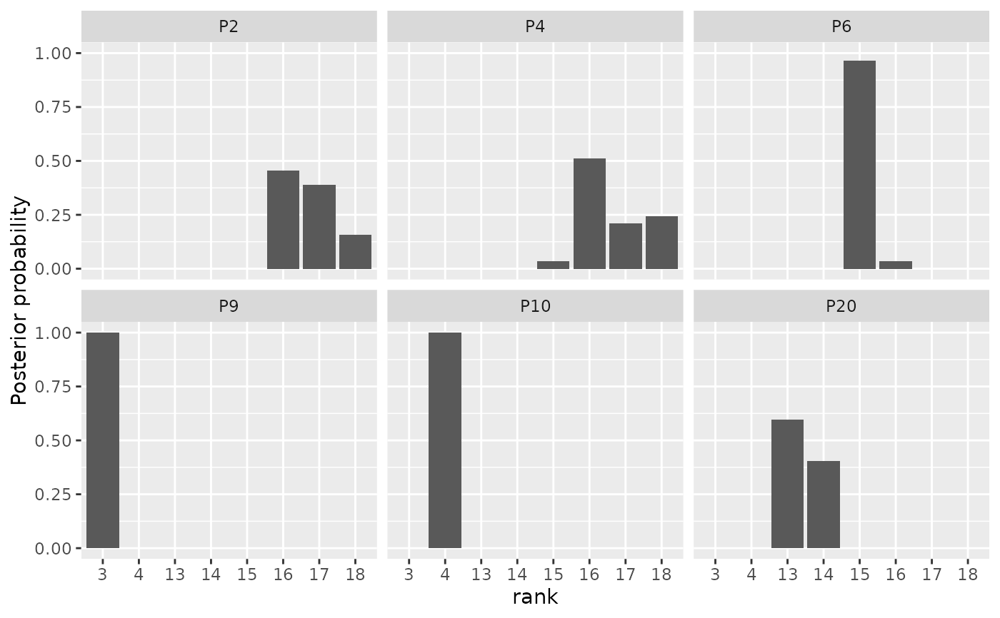
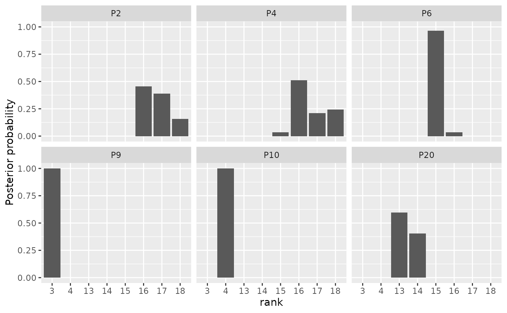

Plot posterior distributions of the parameters of the Mallows Rank model.
Usage
# S3 method for class 'BayesMallows'
plot(x, parameter = "alpha", items = NULL, ...)Arguments
- x
An object of type
BayesMallows, returned fromcompute_mallows().- parameter
Character string defining the parameter to plot. Available options are
"alpha","rho","cluster_probs","cluster_assignment", and"theta".- items
The items to study in the diagnostic plot for
rho. Either a vector of item names, corresponding tox$data$itemsor a vector of indices. If NULL, five items are selected randomly. Only used whenparameter = "rho".- ...
Other arguments passed to
plot(not used).
See also
Other posterior quantities:
assign_cluster(),
compute_consensus(),
compute_posterior_intervals(),
get_acceptance_ratios(),
heat_plot(),
plot.SMCMallows(),
plot_elbow(),
plot_top_k(),
predict_top_k(),
print.BayesMallows()
Examples
model_fit <- compute_mallows(setup_rank_data(potato_visual))
burnin(model_fit) <- 1000
# By default, the scale parameter "alpha" is plotted
plot(model_fit)
 # We can also plot the latent rankings "rho"
plot(model_fit, parameter = "rho")
#> Items not provided by user. Picking 5 at random.

# By default, a random subset of 5 items are plotted
# Specify which items to plot in the items argument.
plot(model_fit, parameter = "rho",
items = c(2, 4, 6, 9, 10, 20))
# We can also plot the latent rankings "rho"
plot(model_fit, parameter = "rho")
#> Items not provided by user. Picking 5 at random.

# By default, a random subset of 5 items are plotted
# Specify which items to plot in the items argument.
plot(model_fit, parameter = "rho",
items = c(2, 4, 6, 9, 10, 20))
 # When the ranking matrix has column names, we can also
# specify these in the items argument.
# In this case, we have the following names:
colnames(potato_visual)
#> [1] "P1" "P2" "P3" "P4" "P5" "P6" "P7" "P8" "P9" "P10" "P11" "P12"
#> [13] "P13" "P14" "P15" "P16" "P17" "P18" "P19" "P20"
# We can therefore get the same plot with the following call:
plot(model_fit, parameter = "rho",
items = c("P2", "P4", "P6", "P9", "P10", "P20"))

if (FALSE) { # \dontrun{
# Plots of mixture parameters:
model_fit <- compute_mallows(
setup_rank_data(sushi_rankings),
model_options = set_model_options(n_clusters = 5))
burnin(model_fit) <- 1000
# Posterior distributions of the cluster probabilities
plot(model_fit, parameter = "cluster_probs")
# Cluster assignment plot. Color shows the probability of belonging to each
# cluster.
plot(model_fit, parameter = "cluster_assignment")
} # }
# When the ranking matrix has column names, we can also
# specify these in the items argument.
# In this case, we have the following names:
colnames(potato_visual)
#> [1] "P1" "P2" "P3" "P4" "P5" "P6" "P7" "P8" "P9" "P10" "P11" "P12"
#> [13] "P13" "P14" "P15" "P16" "P17" "P18" "P19" "P20"
# We can therefore get the same plot with the following call:
plot(model_fit, parameter = "rho",
items = c("P2", "P4", "P6", "P9", "P10", "P20"))

if (FALSE) { # \dontrun{
# Plots of mixture parameters:
model_fit <- compute_mallows(
setup_rank_data(sushi_rankings),
model_options = set_model_options(n_clusters = 5))
burnin(model_fit) <- 1000
# Posterior distributions of the cluster probabilities
plot(model_fit, parameter = "cluster_probs")
# Cluster assignment plot. Color shows the probability of belonging to each
# cluster.
plot(model_fit, parameter = "cluster_assignment")
} # }